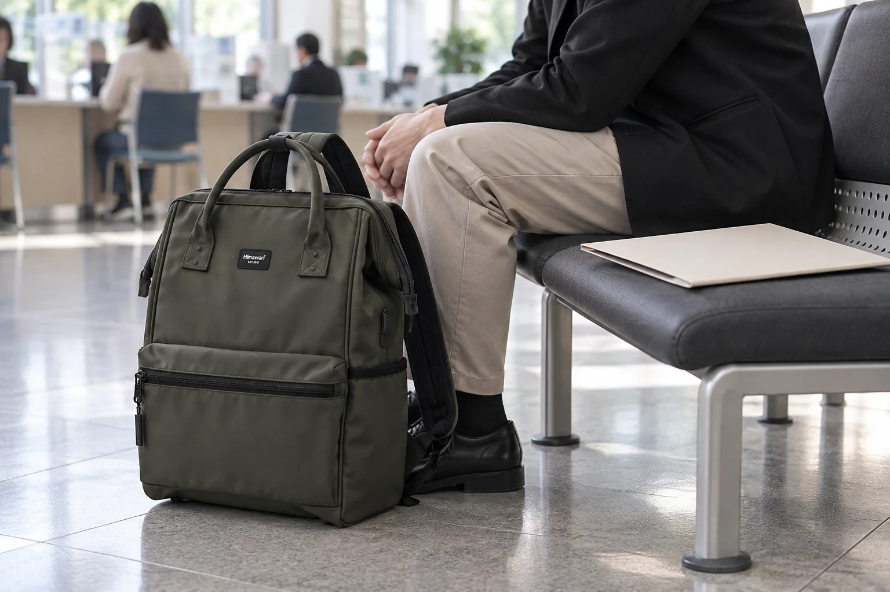

주민센터에 가져갈 종이와 받아올 종이

주민센터에 다녀오면 출발할 때 없던 종이가 가방에 생깁니다. 번호표와 신청 안내, 발급받은 문서를 같은 주머니에 넣으면 집에서 무엇을 보관해야 하는지 다시 구분하게 됩니다. 방문 전에 가져갈 자료와 받은 뒤 보관할 문서를 다른 방향으로 생각해볼 만합니다. 백팩 안의 칸을 많이 만드는 대신 보여줄 물건을 꺼내고, 새 문서를 받아 닫힌 파일에 넣는 흐름을 정하면 관리할 종이의 범위가 분명해집니다.
준비물은 처리하려는 업무와 방문처의 현재 안내를 기준으로 확인합니다. 예전에 같은 곳을 방문했다고 당시의 목록을 그대로 쓰지는 않습니다. 운영 시간과 신청 방법, 신분 확인에 필요한 물건은 해당 기관이나 공식 서비스에서 확인하세요. 이 과정에서 실제로 가져갈 필요가 없는 문서를 빼면 가방 안의 종이도 줄어듭니다. 다른 업무에서 사용한 서류를 혹시 몰라 함께 넣어두면 현장에서 불필요한 정보까지 펼칠 수 있습니다.
보여줄 자료는 한 번에 찾을 수 있게
신청에 필요한 종이가 있다면 제출하거나 확인할 순서로 모읍니다. 원본을 가져갈지, 별도 자료가 필요한지는 기관 안내에 따라 판단하고 임의로 정하지 않습니다. 작은 확인 수단과 종이 자료는 각각 찾을 위치를 정하되 실제 접수에서 함께 꺼낼 수 있는지 생각합니다. 휴대전화 안내를 보여줄 예정이라면 어느 화면을 다시 열어야 하는지 확인해두면 대기 중 개인 사진이나 다른 자료를 찾는 시간을 줄일 수 있습니다.
가져갈 문서가 여러 종류일 때는 업무별로 묶어 표시할 수 있습니다. 제목을 적은 작은 표식은 본인이 알아볼 수 있는 정도로 두고 개인정보를 밖에서 읽도록 적지 않아도 됩니다. 같은 봉투에 넣더라도 오늘 보여줄 것과 이전에 보관하던 것을 나누어두면 필요한 범위를 확인하기 쉽습니다. 서류의 순서를 바꿀 때는 장수를 세는 것과 함께 서로 다른 문서의 앞뒤가 섞이지 않았는지도 살펴보세요.
받아올 문서를 위한 빈자리
문서를 받아올 예정이라면 출발할 때 빈 파일이나 봉투의 자리를 마련합니다. 크기를 알 수 있다면 실제 종이보다 작지 않은 포장을 준비하고, 알 수 없다면 접어서 보관해도 되는지 현장에서 확인할 수 있습니다. 문서 보호를 백팩 기능에 맡기기보다 포장된 상태로 놓을 면을 생각하는 것입니다. 가방에 파일을 넣었을 때 다른 짐의 모서리가 누르는지, 꺼낼 때 입구에 걸리는지도 평소 짐과 함께 확인하면 됩니다.
Himawari No.1884 제품 정보에서 카키 제품의 외부 크기는 가로 30 × 세로 45 × 폭 20cm로 기록되어 있습니다. 이 치수는 겉 크기를 비교하는 자료이며 문서 크기에 맞는 내부 공간을 보장하지 않습니다. 파일은 닫았을 때의 실제 크기와 입구를 함께 봐야 하고, 불투명한 포장을 쓰는 일도 문서의 내용을 가방 밖에 드러내지 않기 위한 별도 준비입니다. 제품 이름만으로 서류 보호 기능을 가정하지 않습니다.

빈 파일을 준비했어도 출발하면서 다른 종이를 채워 넣으면 받은 문서의 자리가 없어집니다. 이날은 받을 문서를 위한 공간을 그대로 남겨둘 수 있습니다. 여러 건의 업무가 있다면 문서가 늘어나는 순서도 생각하세요. 첫 업무에서 받은 종이를 다음 신청 자료 사이에 끼우기보다 별도 면에 두면 두 번째 창구에서 필요한 것만 꺼내기 쉽습니다. 어느 문서를 어디에 넣을지는 현장에서 받는 형태에 맞춰 조정하면 됩니다.
대기할 때는 번호나 현장 안내를 확인하며 필요한 물건만 손에 듭니다. 신청서를 작성해야 한다면 가방을 통로에 펼치지 않고 작업할 수 있는 위치를 봅니다. 개인 정보가 있는 다른 종이는 닫힌 파일에 남겨두고, 작성한 문서는 안내에 따라 제시합니다. 사용한 필기구도 개인 것인지 현장에 둔 것인지 구분해 돌려놓으면 됩니다. 한 번에 모든 자료를 펼치지 않아도 되는 배치가 이때 편리합니다.
발급 직후와 집에서의 확인
문서를 받으면 준비한 파일에 바로 넣기 전에 신청한 종류와 이름 등 확인할 항목을 안내에 따라 살펴봅니다. 이해하기 어려운 표기나 요청과 다른 부분이 있다면 현장에서 담당자에게 문의할 수 있습니다. 집에 와서 발견한 뒤 다시 방문하는 상황을 줄이기 위한 확인입니다. 내용을 확인할 때에도 주변에 불필요하게 펼쳐두지 않고, 필요한 확인이 끝난 뒤 문서를 닫힌 포장으로 옮깁니다.
번호표나 임시 안내는 발급 문서와 같은 중요도로 보관할 필요가 있는지 따로 판단합니다. 다음 방문이나 제출에 참고할 내용이 있다면 그 안내만 남기고, 당일 대기에만 사용한 종이는 문서와 섞지 않는 방식이 가능합니다. 보관 여부가 불분명한 경우에는 현장 설명을 확인하세요. 종이를 모두 한 파일에 넣으면 나중에 다시 판단할 묶음이 두꺼워지므로 받은 목적에 따라 구분하는 것이 정리의 기준이 됩니다.
귀가 뒤에는 문서 파일을 백팩에서 꺼내 실제 보관할 곳으로 옮깁니다. 바로 제출할 자료라면 다음에 함께 가져갈 문서와 모으고, 장기 보관할 자료는 그 용도에 맞는 장소에 둡니다. 임시 종이를 처리할 때 개인정보가 있다면 밖에 그대로 드러나지 않게 관리합니다. 가방에 남은 문서가 없는지 확인하면 다음 외출에 다른 소지품을 넣어도 이번에 받은 종이와 섞이지 않습니다.
다음 주민센터 방문을 위해 남길 기록은 실제 안내받은 준비물과 필요한 확인 방법 정도면 됩니다. 업무 조건이 바뀔 수 있으므로 그 목록을 영구적인 기준으로 사용하기보다 다음 방문처 안내와 대조할 자료로 두세요. 파일을 쓰는 방식도 받은 종이가 많았는지, 한 번에 꺼내기 어려웠는지에 따라 바꿀 수 있습니다. 문서가 이동하는 방향을 알면 준비물의 자리와 받아올 종이의 빈자리를 다시 정하기 쉽습니다.